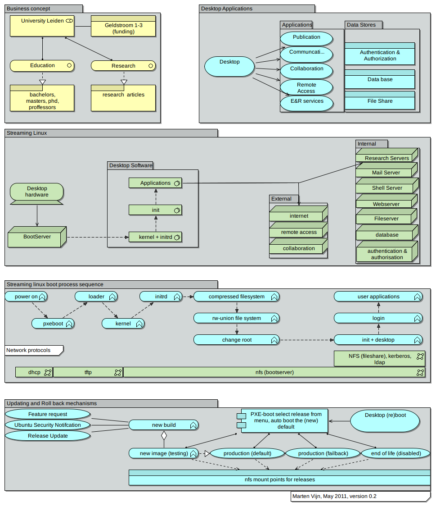

Massive Ubuntu Linux desktop deployment at lower cost
Boot easily more than 100 workstations from one low-end server in single read-only image over network. This saves time and money.
For over 10 years, the Mathematical Institute (MI), Leiden University has been a Linux-oriented organization, using various flavours of Linux on both desktops and servers. The setup used thin clients and terminal servers. In 2009 the end users reported that the thin client and terminal server setup was becoming increasingly slow and unresponsive. This document details the steps taken to significantly improve performance and reliability whilst sharply reducing the total cost of ownership. The main goals were tasked with finding new solutions that improve desktop performance for end users and decrease the amount of work per desktop for administrators. The selected solution was found in combining known technologies like networked booting, a read-only system disk image with live-cd techniques and network attached storage. The Pixie Project derived its name from PXEboot, a system that enables a desktop to boot over the network instead of starting from a hard disk. In early 2010 this setup was tested and deployed. A user satisfaction review showed increased satisfaction after the deployment. The Pixie Project solution was found to be highly scalable, easy to maintain and highly customizable. The complete approach has been documented on the Ubuntu Wiki.
The below paper is mainly intented for decision makers (Chapt. 2, non-technical) and system administrators (Chapt. 3, technical), but may be interesting for a wider audience as well.
